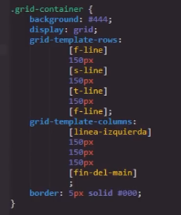

Conceptos
Grid Container
-
El nombre Grid proviene de la "grilla", la cuales es: un sistea organisador del espacio grafico que permite la estructuración, el orden y la disposición de distintos elementos que componen una pieza. Al basrse en este formato los elementos grid poreen una gran bariedad de caracteriticas unicas.
La estructura de un grid container esta compuesta por dibersas columnas y filas de celdas, similar a una tabla
Ejemplo
Nota: Al igual que flexbox los contenedores grid se comportan como elementos de bloque para los elementos externos.
Grid Cell
-
Las Grid celdas se tratan de todos los recuadros que seccionan en contenedor, en un elemento Grid pueden ser definido el número de filas y de columnas segun sea necesario, por defecto la propiedad display: grid; genera una unica columna y no genera ninguna fila, como es obvio esto puede ser modificado a conbeniencia del diseño.

Grid Item
-
Al igual que el FlexBoxtodos los elementos hijos que se encuentran dentro del contenedor son llamados items, es decir un grid item es todo elemento que se asigne en el interior del contenedor grid, por lo tanto la cantidad maxima o minima de grid item es definida por el desarrollador.
Nota: Al igual que en flexBox en grid los "items" son limitados unicamete a los elementos hijos directos, por lo tanto un elemento que se encuentre dentro de un item ya no es considerado como uno.
Grid Tracks
-
Se tratan de conjuntos de grid cell, y se dibiden en dos grupos:
-
Filas
-
Columnas

-
Grid Area
-
las grid area son conjuntos de celdas consecutivas que el desarrollador puede definir, ya que estas no estan estructuradas, por lo tanto cualquier conjunto de celdas consecutivas puede ser definido com un grid area, esto incluye a uno o más grid tracks

Nota: tambien se podria definir una sola celda como un area, pero esto carece de sentido, lo ideal es que un grid area posea almenos dos celdas.
Nota: Las grid areas tienen que ser celdas consecutivas vertical o horizontalmente, no pueden ser en diagonal ni en vartical y horizontal en la misma area.
Grid Line
-
Se refiere a las lineas dibisoras de las columnas y las celdas, por lo tanto se dibiden en dos grupos
Row line: Lineas dibisoras de las filas
Column line: Lineas dibisoras de la columnas
A su vez estas se empiezan a enumerar desde la linea borde izquierda para las columnas y desde la linea borde superior para las filas, de la siguite manera:

Propiedades
Propiedades a aplicar en el Contenedor:
Gird Template
-
Esta primera porpiedad cuenta con dos variaciones gird-template-rows y grid-template-columns, en ambos casos la función es la misma, definir el número de filas y de columnas respectivamente,de la siguente forma: s
Codigo
Resultado

De este modo es como se asigna numero de filas y columnas que poseera el contenedor a la vez que se define las dimenciones de estas, de hecho para definir las dimenciones de las columnas y filas se puede aplicar cualquiera de las dibersas unidades de medida CSS.
Medida "fr"
Los elementos grid cuentan con un valor especial abrebiado como "fr", y su efecto es similar al de la propiedad flex-grow, en la cual se define que todo el espacio sobrante se asigne al elemento en el que esta se aplique, del mismo modo al utilizar este valor para definir las dimenciones de alguna columna o fila esta dispondra del espacio disponible o se reducira segun sea necesario.

Nota: la medida "fr" se puede aplicar a todas las columnas y filas si es necesario
Valor Repeat
Se trata de una función que se puede emplear a la hora de definir el valor de estas porpiedades, su funión es la de simplificar la declaración de las columnas y filas al definirlas una unica vez en lugar de repetir las pautas numerosas veces.
Su sintaxis constan de la palabra clave repeat y dentro de parentesis el numero de repeticiones a realizar seguido de las pautas de las filas o de las columnas, como se puede ver en el siguite ejemplo:
De esta forma se logra que la función ejecute las pautas el numero de beces designado, en este caso: que se cree una columna de de 100px seguida de una de 1fr tres veces.
Nota: Esta función es muy util en aquellos casos en los que es necesario crear numerosas filas o columnas.
Nota: grid-template-columns y grid-template-rows tambien poseen valres dinamicos los caules son mencionados más adelante.
Grid-gap
-
Esta segunda propiedad tambien posee dos bariantes grid-row-gap y grid-column-gap, tal como su nombre lo indica la diferencia entre ambas es que una aplica su efecto a las columnas y otra a las filas, fura de esto el efecto es el mismo, el efecto de esta propiedad es aplicar un tipo de margen entre las celdas del contenedor de la siguite forma:
Codigo

Resultado

Tal como se puede ver en el ejemplo en este codigo se utilizo la propiedad de abrebiatura grid-gap, la cual simplemete generaliza el efeco tanto para las columnas como para las filas, sin embargo se puede utilizar las propiedades grid-row-gap y grid-column-gap de la misma forma, claro que cada una se limita a plicar los margenes a las filas y a las columnas respectibamente.
Nota: Tal como se puede apreciar en el ejmplo esta propiedad no distancia las celdas de los bordes del contenedor, su efecto unicamte se aplica entre celdas.
Grid-column y Grid-row
-
Se tratan de dos propiedades con efectos muy similares entre si llamadas grid-column y grid-row, la función de ambas es definir el espacio que ocupara una celda en en la grilla, para lo cual esta propiedades se basan en las grid line, es decir se basan en las diferentes lineas que se conforman la grilla, tal como se puede ver en este ejemplo, por lo tanto el efecto de cada propiedad es:
-
Grid-column: Define en cuales lineas de columna (lineas verticales) empieza y termina la celda en cuestión, por lo tanto esta propiedad modifica las dimeciones horizontales de la celda.
-
Grid-row: Define en cuales lineas de fila (lineas horizontales) empieza y termina la celda en cuestión, por lo tanto esta propiedad modifica las dimeciones verticales de la celda.
Por lo tanto se podria decir que estas propiedades modifican la cantidad de casillas que ocupara la celda selecionada, como en el siguite ejemplo:
Codigo

Resultado

Una caractertica de las grillas es que pese a que el espacio ocupado por las celdas se modifique, esto solo afecta a las dimenciones de estas, no significa que la celda absorba a algun item grid, estos elementos simplemete proceden a correrse dando espacio a la celda para ocupar el espacio designado, ya sea desplazandose a otra columna o desendiendo a otra fila.
A su vez tal y com se pude ver en el ejemplo esta propiedad acepta dos valores numericos en los cuales el primero representa la numeración de la linea donde comienza la celda seguida de un "slash (/)"l y continuando con el segundo digito, el cual representa la numeración de la linea donde termina la celda, esto es igual para ambas propiedades.
Es importante no confundir, estos valores numericos no representan el numero de casillas que ocupara la celda, si no en cuales lineas empieza y termina la celda en cuestión, sin embargo axiste una forma de utilizar el número de casillas que se desea utilizar como valor para esta propiedad, esto se logra añadiendo el valor span delante del segundo número, de ese modo este deja de represetnar la numeración de la linea, si no que pasa a representar el numero de seldas a cubrir de la siguente forma:
Codigo
Resultado

De este modo la declaración de este ejmplo deja de ser: "empieza en la lina 1 y termina en la 3" y pasa a ser: "empieza en la lina 1 y cubre 3 casillas". Este metodo que puede simplificar bastante más la implementación de esta propiedad.
Bariantes
Realmente ambas propiedades se tratan de propiedades de abrebiatura, ya que cada una tiene la función de recibir los datos pertienetes a otras dos propiedades de la siguite forma:
-
Grid-column abrebia los datos de:
Grid-column-start: Define la linea de columna (vertical) en la que empieza la celda
Grid-column-end: Define la linea de columna (vertical) en la que termina la celda
-
Grid-row: Abrebia los daots de:
Grid-row-start: Define la linea de fila (horizontal) en la que empieza la celda
Grid-row-end Define la linea de fila (horizontal) en la que temina la celda
Ejemplo
Por lo tanto utilizar estas propiedades es más optimo que sus verciones espesificas lo que nos permite definir más datos con menos lineas de codigo.
Dar nombre a las lineas
Esta es una opción que nos brinda CSS, basicamente permite almacenar un nombre de nuestra elexión en una variable que se binculara de forma automatica con cada una de las lineas de la grilla, esto se hace a la vez que se define las dimenciones de las filas y columnas, para vincular el nombre con las respectivas linas es necesario cambiar la estrucuta de los valores de las propiedades grid-template-rows y grid-template-columns de la siguete forma:
Con esta estructura se vinculan los nuevos nombres a cada lina ya sea de columna o de fila, es importante encerrar los nombres en corchetes ("[]") y mantener la estructura de los salto de linea, una vez hecho esto se puede utilizar cualqueira de los nombres colo si la numeración de la linea se tratase.
Ejemplo
-
Grid Implicito y Grid Explicito
Explicito es algo que esta explicado de forma clara y detallada sin dejar nada por sabido o entendido.
Inplito es algo que esta incluido sin decirlo o espesificarlo.
Teniendo presente estos dos definiciones podemos hacernos a la idea de que trata este concepto, el grid explicito son todas aquellas celdas, columnas y filas que son estructuradas y detalladas en los estilos, por otro lado el grid inplicito consta de todas aquellas celdas, filas o columnas "extra" que pueden ser añadidas por un nuevo elemento, las cuales no son espesificadas o definidas por los estilos pero aun así son presentadas dentro de la cuadrilla
Un ejmplo de esto seria que se estructure en CSS una cuadrilla con 3 columnas y 3 filas (generando 9 celdas), ese es el brid explito, sin embargo en el codigo HTML existen dos elementos más dentro del contenedor al que se le esta aplicando los estilos grid, estos elementos no definidos son el grid inplicito.
Para trabajar con el grid inplito existen tres (3) propiedades, las cuales son las siguites:
Grid-auto-rows
-
El funciónamiento de esta Propiedade es muy similar a gird-template-rows, con la diferencia de que esta se aplica espesificamete para el grid inplito y que esta propiedade no definen la cantidad de filas que seran creadas, si no que en vez definen las dimenciones del grid inplito.
Por defecto grid trata al grid inplicito como filas, para definir las dimecniones de estas se hace lo siguite:
Sin Aplicar la propiedad
Codigo
En esta propiedad no es necesario declarar un valor para cada celda por seprado, para estos casos se define un unico valor que se aplicara a todo el grid inplito, este codigo declara: "el grid inplito tendra 150px"
Resultado
Nota: la propiedad grid-auto-rows no surte ningun efecto si el grid inplicito esta ubicado como columnas
Nota las filas inplicitas tambien pueden poseer la medida fr.
Grid-auto-flow
-
A su vez tambien es posible modificar la orientación por defecto del grid inplito, esa es la función de esta propiedad, para lo cual cuenta con el valor columns, el cual indica que el grid inplito sea tratado como culumna en vez de como fila.
Grid-auto-flow tambien cuenta con otro uso y ese es el de rellenar cualqueire espacio bacio que se genere dentro de la grilla, esto puede suceder a raiz de las dimenciones que se les asigne a celas continuas, si por algun motivo una de las celdas se les asigna un grid Template que la fuerse a re-ubicarse para poder cumplir con las indicaciones se generaran espacios bacios como este:
Para rellenar estos espacios bacios se utiliza la propiedad auto-flow con el valor "dense" de la siguite forma:
Codigo
Resultado
Grid-auto-columns
-
El funciónamiento de esta Propiedade es muy similar a gird-template-colums, con la diferencia de que esta se aplica espesificamete para el grid inplito y que esta propiedade no definen la cantidad de columnas que seran creadas, si no que en vez definen las dimenciones del grid inplito.
Por defecto grid trata al grid inplicito como filas, por lo que esta propiedad debe ser usada en conjuntocon grid-auto-flow con el valor columns de la siguiente forma:
Codigo
Al igual que en grid-auto-rows en esta propiedad no es necesario declarar un valor para cada celda por seprado, ya que para estos casos se define un unico valor que se aplicara a todo el grid inplito.
Resultado

Nota: la propiedad grid-auto-columns no surte ningun efecto si el grid inplicito esta ubicado como filas.
Nota las columnas inplicitas tambien pueden poseer la medida fr.
Grid Dinamico
Es posible el definir la grilla de modo que el numero de filas y columnas se ajuste a las dimenciones del dispositivo de forma dinamica, para esto se utilizan las siguite propiedades
Como ya se ha mencionado antenriormente grid-template es la propiedad que define la cantidad de filas y columnas junto con sus respectivas dimenciones, por lo cual acepta multiples formatos de medidas, entre los cuales se encuentra fr el cual es un valor exclusibo de los elementos grid, cuando una fila o columna es definida con este valor no solo se asignara unas dimenciones base, si no que a su vez esta se adaptara al espacio dispoible en pantalla, por lo tanto permite que la tabla se ajuste hasta cierto punto a las dimenciones de la pantalla.
Min-content y Max-Content
-
En los elementos grid el contenido se ajusta automaticamente a las dimenciones de sus respectivas celdas, sin embargo una opción tambien es el definir que el tamaño de la celda se ajuste en base al espacio ocupado por el contenido, esto se logra de igual modo con las propiedades grid-template-columns y grid-template-rows pero en esta ocación con los valores:
-
min-content: Define que las dimenciones de la celda seran iguales al menor espacio posible que pueda ocupar el contenido de la celda de la siguenteforma:
Codigo
Resultado
-
max-content: Define que las dimenciones de la celda seran iguales al mayor espacio posible que pueda ocupar el contenido de la celda de la siguite forma:
Codigo
Resultado
Nota: Realmente es raro llegar a utilizar el valor max-content, la mayorias de las ocaciones se utiliza unicamte min-content.
-
Minmax
-
Se trata de un valor de grid-template-columns o grid-template-rows que en si es la combinación de min-content y de max-content, este valor es capaz de definir el valor minimo y maximo que podran adoptar las filas y columnas, su estructura es la siguite:
Nota: min-content y max-content pueden definirse como los valores minimo y maximo respectivamente en "minmax" como si de cualquier otro tipo de medida se tratase.
Auto-fill
-
Esta propiedad permite que la cantidad de filas y columnas de la grilla se modifiquen dinamicamente en base a las dimenciones de la pantalla, es decir el efecto de esta propiedad no es que las dimenciones de las celdas cambien, en vez de eso re-organiza las celdas ya sea ubicandolas en fila o columna segun el espacio dispoblie en pantalla.
Por lo tanto esta propiedad permite que en pantallas anchas la grilla se ensanche poseyendo numerosas columnas y pocas filas, del mismo modo en pantallas estrechas la grilla se afina pasando a poseer numerosas filas y pocas columnas.
Esta propiedad se utiliza como valor de las propiedades grid-template-columns y grid-template-rows, a su vez se utiliza con las propiedades min-content, max-content y minmax de la siguente forma:

Este ejemplo indica lo siguite: "repite la creación de columnas auto-fill con un valor minimo de 120px y un valor maximo adaptable al espacio dispoible (1fr)", de este modo se crea una celda por cada "div" establecido en el documento HTML, y si el espacio es suficiente ubica todas las celdas posibles como columnas, y si el espacio no es suficiente para colocar más celdas distribuyelo entre todas (esto por el valor 1fr).
Auto-fit
-
Esta propiedad es muy similar a auto-fill tanto en funcionamiento como en empleación en el codigo
La diferencia solo se evidencia en los casos en los que se exista espacio disponible en el contenedor grid, ya que esta propiedad una vez todos los eleementos se ubicaron en una linea esta permite escalarlos aumentando sus diemciones, mientras que en su lugar auto-fill no permite que los eleementos se escalen, si no que en caso de que exista espacio dispoblie esta genera celdas invisibles para ocupar ese lugar, evitando que las celdas visibles dispongan de ese espacio
Auto-fit
Auto-Fill
En este ejemplo se uso una herramenta de google que permite ver las celdas invicibles generadas por auto-fill.
Alineación y control de flujo
La alinación en los elementos grid se diferencia de la de flex, ya que en vez de tratarse de una alineación total del contene, se tratade de una alineación dentro de cada celda, por lo tanto se podria decir que cada celda pasa a ser un "flex-container".
Debido a esto la alineación de las grillas estan constituida por dos partes en función de los dos tipo de elementos que almacena, por un lado se tiene la alinación de las celdas organizadas en filas y columnas que conforman la grilla, y por otro lado tenemos la alineación del contenido de las celdas, por lo tanto existen propiedades para controlar el como se justifican las celdas y otras para definir el como se justifica el contenido de estas.
Alineación del contenido
Estas propiedades unicamente definen la alineación del contenido de las celdas:
Justify-items
-
Esta propiedad define la alineación del contenido de forma horizontal, es decir el si se encuentra centrado, a la derecha o izquierda, sus posibles valores son:
Center: Centra el contenido horizontalmente
Start: Alinea el contenido a la derecha
End: Alinea el contenido a la izquierda
stretch: Se trata del valor por defcto de las celdas grid, estira horizontalmente la celda para que ocupe todo su espacio designado
Nota: Los grid items no tienen ni largo ni ancho asi que al aplicar otros valores que no sean stretch las dimenciones de la celda se ajustan como en la siguite imgen:
Nota: La distancia entre las celdas se debe a la propiedad grid-template.
Nota: Se puede usar paddig para aumetar el tamaño de la celda.
aling-items
-
Esta propiedad define la alineación del contenido de forma vertical, es decir el si se encuentra centrado, en la parte superior o inferior, sus posibles valores son:
Center: Centra el contenido verticalmente
Start: Alinea el contenido en la parte superior
End: Alinea el contenido en la parte inferior
stretch: Se trata del valor por defcto de las celdas grid, estira verticalmente la celda para que ocupe todo su espacio designado
Nota: tal como se pueede apreciar ambas propiedades cuentan con los mismos valores con las mismas funciones, solo que una los aplica en el eje vertical y la otra en el eje horizontal.
Nota: Esta es la forma correcta de centrar los items.
Nota: Las propiedades de los items no pueden recibir las propiedades flex ">Space-around", ">Space-between" ni ">Space-evenly".
Propiedades del Grid-container
Se tratan de aquellas dos propiedades que definen exclusibamente la alineación de las celdas mediante la organización de las filas y columnas:
Justify-content
-
esta propiedad permite que las columnas se ubiquen horizontalmente, es decir en el centro, en la derecha o a la izquierda, del mismo modo sus valores son:
Center: Centra las columnas horizontalmente
Start: Alinea las columnas a la derecha
End: Alinea las columnas a la izquierda
stretch: Se trata del valor por defcto de las celdas grid, estira horizontalmente la celda para que ocupe todo su espacio designado
Esta propiedad tambien acepta los valores flex:
Space-around: Deja la mayor cantidad de espacio horizontal posible alrededor de las columnas
Space-between: Separa las columnas horizontalmente con la mayor cantidad de espacio posible
Space-evenly: Asigna la misma distancia horizontal a todas las columnas
Aling-content
-
Esta propiedad permite que las filas se ubiquen verticalmente, es decir que los hagan en el centro, en la parte superior o inferior del contenedor, sus valores posibles son:
Center: Centra las filas verticalmente
Start: Alinea las filas en la parte superior
End: Alinea las filas en la parte inferior
stretch: Se trata del valor por defcto de las celdas grid, estira verticalmente la celda para que ocupe todo su espacio designado
Esta propiedad tambien acepta los valores flex:
Space-around: Deja la mayor cantidad de espacio vertical posible alrededor de las columnas
Space-between: Separa las columnas verticalmete con la mayor cantidad de espacio posible
Space-evenly: Asigna la misma distancia a todas las columnas verticalmente
Nota: para que estas propiedades se evidencien debe de haber espacio disponible en el contenedor, para que de ese modo las filas y columnas puedan desplazarse.
Nota: Es perfectamente correcto el aplicar las cuatro propiedades a la vez, ya que de ese modo se estaria definiendo la alineación tanto de las filas y columnas como de su contenido.
Notas: Todas estas propiedades tambien aceptan los valores "flex-start" y "felx-end", ya que se comportan como contenedores flex, sin embargo nada cambia al emplear estos valores.
Alineación indibidual de celdas
Tambien existen propiedades que se enfocan en definir la alineación de una unica celda en espesifico, el funcionamiento de estas propiedades es muy similar al de cualquiera de las anteriores propiedades de alineación, con la diferencia de que estas propiedades se aplican a la celda en indibidual y no a los conjuntos de seldas, estas propiedades son:
Aling-self
-
Esta propiedad define la alinación vertical de la celda, sus valores son:
Center: Centra la celda verticalmente
Start: Alinea la celda en la parte superior
End: Alinea la celda en la parte inferior
stretch: Se trata del valor por defcto de las celdas grid, estira verticalmente la celda para que ocupe todo su espacio designado
Justify-self
-
Esta propiedad define la alinación horizontal de la celda, sus valores son:
Center: Centra la celda horizontalmente
Start: Alinea la celda a la derecha
End: Alinea la celda a la izquierda
stretch: Se trata del valor por defcto de las celdas grid, estira horizontalmente la celda para que ocupe todo su espacio designado
Place-self
-
Se trata simplemente de la propiedad de abrebiatura de justify-self y de aling-self, por lo que su proposito es cumplir con exactamente la misma función que estas pero en una sola declaracaión, esta propiedad recibe dos datos a la vez, el primero se trata del aling-self (alinación vertical) mientras que el segundo se refiere a justify-self (alineación horizontal), de la siguite forma:
Del mismo modo ya que ambas propiedades aceptan los mismos valores tambien se puede sinplificar aún más ingresando un unico valor, en este caso ese valor se aplicara a ambas propiedades, como en el siguiente ejemplo:
Nota: Su uso solo es realmte util en los casos en los que se desee modificar ambas propiedades a la vez.
order
Esta propiedad se asemeja mucho al z-index, propiedad que define que elemento se bisualizara por encima o por debajo cuando estos se sobreponen entre si, esto lo hace en base al valor numerico que se le asigna a cada elemento, en el cual el más grande se ubica por encima de los otros.
Por su lado order lo que hace es definir en que orden se ubican los elementos, es decir esta propiedad define el si los items se ubican de primero, segundo, cuarto, ultimo etc, en base al valor numerico que se le asigne a cada item al igual que en la propiedad z-index. En esta propiedad el item con el menor valor se ubica en el inicio, mientras que el item con el mayor valor lo hace al ultimo.
Codigo
Resultado
Grid Areas
Las Grid Areas son una forma de estructurar los elementos grid alternativa a grid-template-columns y a grid-template-rows, ya que de esta forma las casillas de la grilla son declaradas de una forma diferente, para esto se utiliza la propiedad grid-template-areas, esta dinamica consiste en otorgarle un nombre a cada grupo de casillas definiendo a cada una de estas con ese nombre de la siguite forma:
Cada uso del respectivo nombre del grupo genera una casilla, en este ejemplo como nombre de los grupos se utiliza las partes basicas de una paguina web, por lo tanto en esta estructura se estan generando una fila perteneciente al area "header" conformada por tres casillas, seguido a esto se creo un area llamada "aside" conformada por una columna de dos casillas, seguido de una tercera area llamada "main" conformada por cuatro casillas ocupando dos columnas y dos filas, y por ultimo un grupo llamado "footer" conformado por una fila de tres casillas, de esta forma es como se declara la generación de las casillas utilizando las areas.
Lo siguite es asignar las areas generadas a cada uno de los elementos HTML:
De este modo los elementos proceden a ubicarse en el espacio designado para cada una de las asillas de sus respectivas areas.
Como se puede ver los elementos se ubicaron segun la estructura de areas definida antenriormente, sin embargo esto es todo, esta tecnica unicamente consiste en generar las casillas, para asignarles medidas y seguir trbajando con la grila se utilizan mecanismos normales, por ejemplo:
En este ejemplo aparte de aumentar el tamaño de las areas generando más celdas, se define el tamaño de las celdas ya creadas utilizando grid-template-columns y sus respectivas funciones, así como tambien las diimenciones del contenedor y un borde.
De ese modo es como se pueden generar celdas utilizando las areas grid, si bien no ofrece mucho más que eso es una alternativa que puede llegar a resultar util al estrucutrar la grilla.
Nota: Lo ideal seria darle al "header" y al "footer" medias fijas
Nota: Al igual que con el uso de grid-template-columns y grid-template-rows con las areas tambien es posible el asignarle nombres a las lineas, esto se puede hacer de la misma forma que se hace con grid-template-columns y grid-template-rows.